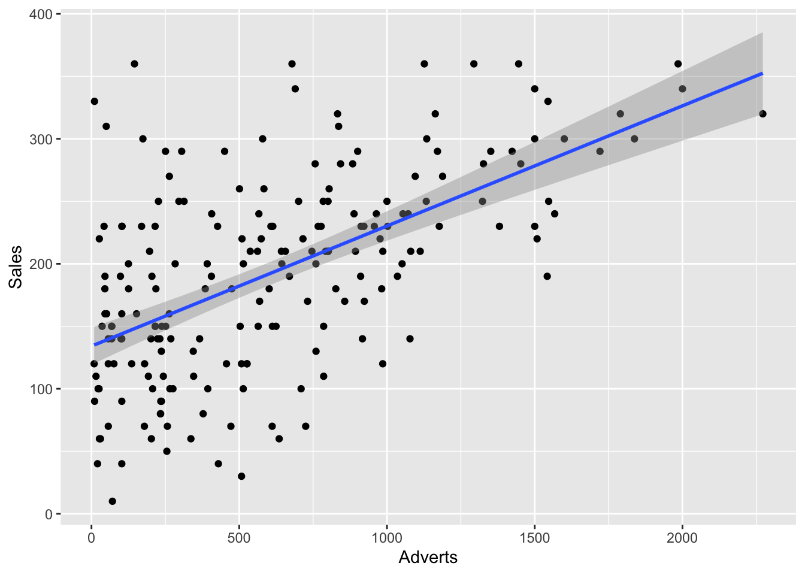

50+(100*5)[1] 550James Van Slyke
Understanding Linear regression.
As we saw with correlation, one way we can understand a relationship is through using a line as a model. Lines require two points and when using a scatterplot, based on the slope, an estimate of the strength of the relationship between two variables can be assessed. Linear regression adds more tools to understand the relationship between two variables.
Let’s start with the basic equation for a line. \[ Y=b_0 + b_1X \] \(b_1\) tells us the shape of the model, basically whether it’s positive or negative, just like we saw with correlational coefficients earlier. \(b_0\) stands for our Y intercept or where the line crosses the Y axis. So these two values essentially stand in for our two points on a line. One indicates the point on the Y axis where the line crosses the Y axis and the other one describes the slope of the line (either positive or negative) and the degree of the slope of the line.
One thing that regression lines enable is the prediction of one variable (the outcome variable or dependent variables) based on another (predictor variable or independent variable). This is a form of simple regression. If you are using more than one variable or several predictors to predict an outcome variable, this is known as multiple regression.
For example, going back to our Album Sales dataset. If we wanted to predict album sales (Y)(outcome variable) based on our advertising budget (X)(predictor variable) and the regression model had 50 as the constant and 100 as the gradient, the formula would look like this: \[ album\;sales = b_0 + b_1(advertising\;budget) \] The we could supply the constant and the gradient \[ album\;sales = 50 + (100 \times advertising\;budget) \] Then we could solve for the number of albums we could sell if we spent 5 dollars on the advertising budget \[ album\;sales = 50 + (100 \times 5) \] Thus in R
The values of 50 and 100 were just made up numbers. How do we find the actual intercepts and gradients using R?
Let’s take a look at the code for running a linear regression in R
For regression models, the output needs to be saved in an object, so there’s a second step to display the results.
Call:
lm(formula = Sales ~ Adverts, data = Album_Sales)
Coefficients:
(Intercept) Adverts
134.13994 0.09612 Notice that when the object is called up it provides the intercept and gradient discussed earlier. Thus we can plug these numbers into our formula using R and find the predicted album sales based on spending 500 dollars on the advertising budget.
The two coefficents have been identified, but we still don’t know if advertising is a good predictor of album sales. However, this information is also in the results that were saved in the object “regression”. To look at these results, the summary command is used.
Call:
lm(formula = Sales ~ Adverts, data = Album_Sales)
Residuals:
Min 1Q Median 3Q Max
-152.949 -43.796 -0.393 37.040 211.866
Coefficients:
Estimate Std. Error t value Pr(>|t|)
(Intercept) 1.341e+02 7.537e+00 17.799 <2e-16 ***
Adverts 9.612e-02 9.632e-03 9.979 <2e-16 ***
---
Signif. codes: 0 '***' 0.001 '**' 0.01 '*' 0.05 '.' 0.1 ' ' 1
Residual standard error: 65.99 on 198 degrees of freedom
Multiple R-squared: 0.3346, Adjusted R-squared: 0.3313
F-statistic: 99.59 on 1 and 198 DF, p-value: < 2.2e-16Remember that the variable of interest, the predictor variable, was advertising. If we worked at this record company we would be interested if money spent on advertising would help in increasing record sales. The first thing to notice is the F statistic, which analyzes whether the regression model is significant or not. Notice that this number is 99.59 with a p value well below .05, so that tells us our regression model is a good one.
Where did this statistics analysis come from though? To answer this question we need to look at little bit closer at how to analyze the fit of a line.
From the discussion of correlation, you may remember that a regression line is a line that is used to fit the data as well as possible, but as with all statistics there is a certain amount of error. The regression line does not cross all the points on a scatterdot, but tries to be as close to as many points as possible. The difference between the line and a particular point is known as a residual. A residual is similar to a deviation, but it is the distance or error between the line and a particular point. The smaller the residual the better the line is a predictor for that particular point or score. The larger the residual the less predictive the regression line is for that score.
To evaluate the regression model, the average amount of residual error must be calculated. However, the same problem observed with trying to find the average deviation for a dataset remains here. If you add up all the residuals and try to divide by N, the residuals will add up to zero, which doesn’t help very much. We solve this problem the same way it was solved with deviations, we square them!. This number becomes the sum of squared deviations and is symbolized below: \[ SS_R \] To decide whether the regression line is a good predictor, something must be used as a comparator. In this case, the mean is compared to the line to see which serves as a better predictor for the data. If the line has a low amount of error (low \(SS_R\)) and shows considerable improvement in comparison to the mean (high \(SS_M\)), the regression line is a good predictor. Sum of squares model (\(SS_M\)) is a measurement of the average distance between the line and the mean. This provides a measurement of the slope or gradient of the line. Remember that the steeper the slope or gradient of the line the stronger the relationship between two variables. Here the mean, (which is a horizontal line drawn on the Y axis) acts as an estimate of zero relationship or correlation. Thus, the greater the difference between the line and the mean, the greater the relationship or correlation between the variables and the better the predictor variable is at predicting the relationship.
There are a few more steps to get to the F value. 1. Each sum of squares must be divided by the degrees of freedom. Think back to finding the standard deviation. We divided the sum of squares by N -1. Sum of squares residual and sum of squares model each have a slightly different degrees of freedom. - k - 1 - N - k 2. Once we’ve divided by the degrees of freedom, we get two numbers, The Means squared model and the Means squared residual. This his how we get to the F value. \[ F = \frac {MS_M}{MS_R} \] F is a proportional value, so it starts at 1 and is never a negative value. The higher the F value the higher the amount of improvement demonstrated by the regression model in comparison to the residuals (error in the model).
Of course, we also want to include a scatterplot to show the relationship.
ggplot(Album_Sales, mapping = aes(x = Adverts, y = Sales)) +
geom_point() +
geom_smooth(method = 'lm')`geom_smooth()` using formula = 'y ~ x'
Finally, the results section should be properly formatted. Here is a good example:
The regression model does appear to be significant. Advertising budget is a good predictor of sales based on the ANOVA test, F (1/98)= 99.59, p < .001. Based on the \(R^2\) value of .33, 33% of the sales variable can be explained by the advertising budget.